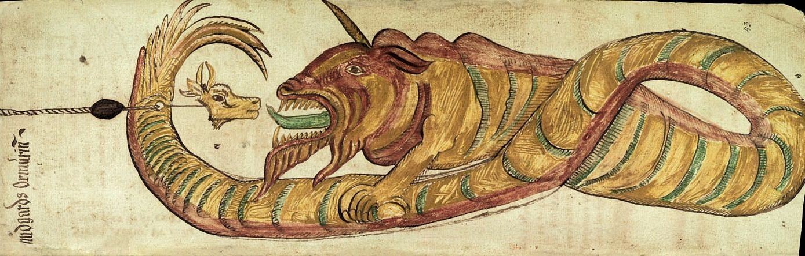

Líf and Lífþrasir

Jörmungandr

Odin
Norse mythology is a body of myths belonging to the North Germanic people that stems from the Old Norse religion. The old Norse religion can be traced back to about 500 BC with it dying out during the second half of the Viking Age, 900 AD to 1050 AD. It was during this century and a half period that the Vikings began converting to Christianity and the Norse Mythology started to form. The original mythology was passed down in the form of poetry until the 11th-18th centuries when the Eddas (two Medieval Icelandic literary works) and other medieval texts were written. This resulted in the Norse mythology being the best-preserved version of the older common Germanic paganism.
Odin
Thor
Loki
Váli
Fenrir
Jörmungandr
Ragnarök is the largest and most important event in the Norse mythology. Ragnarök was a prophesied series of impending events, including a great battle that takes place during the entirety of Ragnarök. In this battle the vast majority of mythological figures, including most of the gods, die. In addition to the great battle, there are also a series of catastrophic natural disasters, including the burning of the world, and culminate in the submersion of the world underwater. After these events, the world rises again, cleansed and fertile. The surviving gods will meet with the gods who return (most notably, Baldr and Höðr). The Earth is repopulated by the two human survivors, Líf and Lífþrasir, who survived by hiding in a wood called Hoddmímis holt.
Líf and Lífþrasir
Jörmungandr
Odin